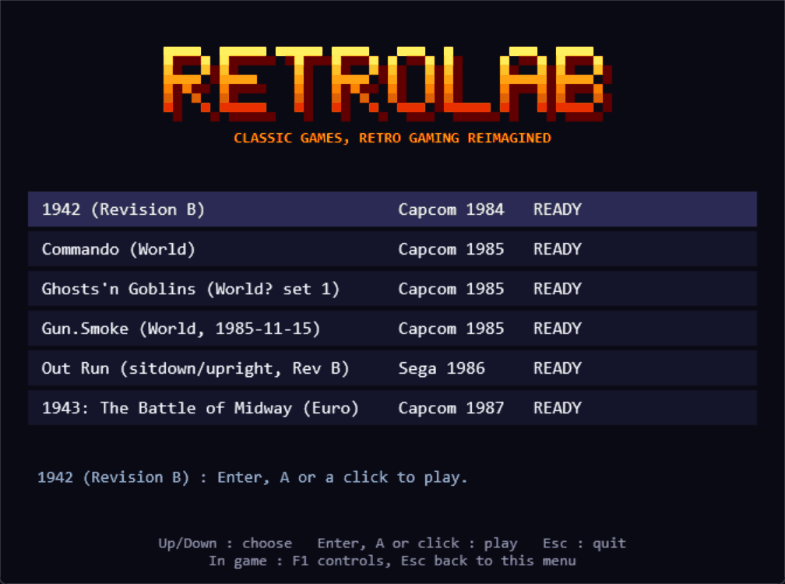

Classic Games, Retro Gaming Reimagined
Understanding and rewriting the emulation of 1980s arcade cabinets, chip by chip, in modern Object Pascal, as code that both humans and AIs can read and reuse.
The games

Xbox gamepad or any XInput gamepad, or the keyboard; controls can be rewired with F1. Click a game to open its board in the architecture.
Architecture
The code follows the real machine. Each part is a Pascal unit, and each unit only knows its direct neighbours.
The cabinet
window, speaker, gamepads, menu
samples/Cabinetsrc/cabinetThe connector
player inputs in, picture and sound out, one frame at a time
Arcade.BoardThe board
the wiring: memory, interrupts, video
src/boardsThe chips
CPUs and sound, with no dependency
src/chipsThe cartridge
which ROM files, at which address, for which board. Generated from MAME, every file checked by its CRC32.
src/romsets- A board is named after its printed circuit (
Capcom84100), never after a game. - Adding a game on a known board: one cartridge unit.
- Adding a board: one board unit, reusing the chips.
- The connector is the same for every board: the cabinet knows nothing about a Z80 or a 68000.
The boards and their chips
Pick a board: its chips light up. Pick a chip: the boards that use it light up.
Boards
Chips
Picture fidelity
An OutRun frame as the cabinet computes it, then the layers it is made of. Each layer comes from the same code as in the game, simply shown alone.


- The picture is built line by line, in the order the hardware composes it: back road, rear background, front background, front road, text, sprites.
- The 4096 colours are computed from the board's resistor network (3.9 kΩ, 2 kΩ, 1 kΩ, 500 Ω, 250 Ω), plus the 470 Ω resistor that gives shadow and hilight.
- Scroll values are latched at line 261, as on the board: a change in the middle of a frame does not tear the background.
Computing fidelity
- Z80: the ZEXDOC and ZEXALL suites pass, 67 tests out of 67, undocumented opcodes and flags included.
- 68000: 99.55 % of the 822,000 instructions of the SingleStepTests suite give the same registers, the same memory and the same cycle count as the real chip.
- Synchronisation: the CPUs of a board advance scanline by scanline, and interrupts fall on the same lines as on the original board.
- Determinism: with the same inputs, the whole board state (memories, registers) has the same fingerprint at every frame. A recorded game replays identically, and every code change is checked against these fingerprints.
- Cartridges: generated from MAME's definitions, every ROM file checked by its CRC32. A wrong file is refused by name.
This is a work in progress. What comes next is in the porting plan.
Get started
1. ROMs: you provide them
No ROM is provided. Use your own MAME sets, in a roms/ folder at the root of the repository.
| Game | File | MAME set |
|---|---|---|
| 1942 | roms/1942.zip | 1942 (Revision B) |
| Commando | roms/commando.zip | Commando (World) |
| Gun.Smoke | roms/gunsmoke.zip | Gun.Smoke (World, 1985-11-15) |
| 1943 | roms/1943.zip | 1943: The Battle of Midway (Euro) |
| Ghosts'n Goblins | roms/gng.zip | Ghosts'n Goblins (World? set 1) |
| OutRun | roms/outrun.zip | Out Run (sitdown/upright, Rev B) |
2. Build
Open samples/Cabinet/Cabinet.dpr in Delphi and compile for Win64. Every unit is listed in the .dpr: nothing to configure. Developed with Delphi 13.
3. Run
Cabinet.exe: a menu lists the games, ready or with their ROM missing. Cabinet.exe --set commando starts a game directly.